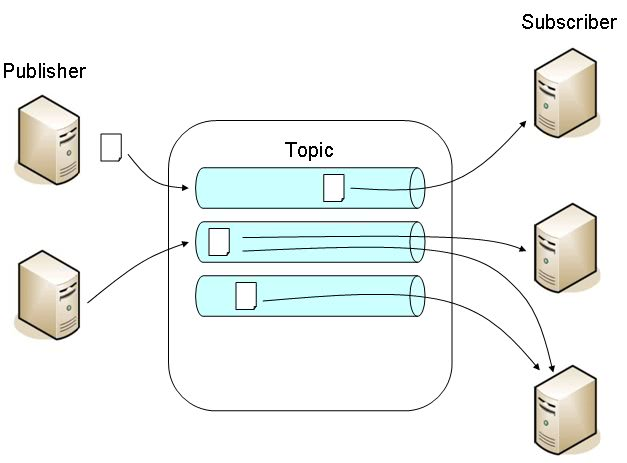
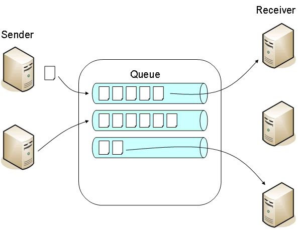

訊息服務主要由三個角色組成：傳送節點（End point）、接收節點、訊息導向中介軟體（Message-Oriented Middleware, MOM）。傳送節點又稱之為訊息生產者，接收節點又稱為訊息消費者。
傳送節點負責建立與傳送訊息，接收節點負責接收與處理訊息，傳送節點將訊息送至MOM，接收節點則從MOM取得訊息，MOM作為一個訊息的交換場所，本身不處理訊息，而提供訊息送達保證、交易、容錯、負載平衡等功能。
MOM讓傳送節點與接收節點之間無需知道彼此的存在，MOM提供訊息通道（Channel），傳送節點僅需知道訊息的目標通道，將訊息送至通道上，接收節點也僅需知道至哪個通道取得訊息並加以處理，傳送節點與接收節點之間為鬆散耦合，任一方修改或更新，並不會影響另一方，除此之外，訊息服務支援非同步模式，訊息傳送之後無需等待，程式可以繼續流程。
訊息的傳送模式可以分為兩種：出版-訂閱（Publish-Subscribe）模式、點對點（Point-to-Point）模式。
- 出版-訂閱模式
在出版訂閱模式下，傳送節點為出版者，接收節點為訂閱者，MOM提供的頻道稱之為主題（Topic），出版者將訊息出版至主題上，訂閱者訂閱感興趣的主題。
每個主題可能會有多個訂閱者，每個訂閱者所收到的是訊息的複本，基本上，每個訊息只能被同一個訂閱者接收一次。出版者也可以自行決定要將訊息發送至哪一個主題。
出版-訂閱模式出版者採Push模式，只要主題上有新訊息，訂閱者將馬上收到訊息，發佈訊息時，訂閱者不一定會在線上，一但訂閱者上線，就會馬上收到訊息。
每個主題可能會有多個訂閱者，每個訂閱者所收到的是訊息的複本，基本上，每個訊息只能被同一個訂閱者接收一次。出版者也可以自行決定要將訊息發送至哪一個主題。
出版-訂閱模式出版者採Push模式，只要主題上有新訊息，訂閱者將馬上收到訊息，發佈訊息時，訂閱者不一定會在線上，一但訂閱者上線，就會馬上收到訊息。

- 點對點模式
在點對點模式下，MOM提供的頻道稱之為佇列（Queue），傳送節點稱為傳送者（Sender），接收節點稱為接收者（Receiver），傳送者將訊息送至佇列，接收者若要處理訊息，則主動至佇列上取得訊息。
點對點模式採用Pull模式，接收者要主動至佇列查看取得訊息，若訊息發佈至佇列而尚未被接收者取出處理，則保存在佇列中，接收者取得訊息後，會發出一個ACK（Acknowledgment）給佇列，告知訊息已取得，佇列再將訊息刪除。
點對點模式下，佇列會保留訊息至接收者取出為主，因此佇列亦扮演緩衝區的作用，多個接收者可以使用同一個佇列，但佇列中的每個訊息只能被其中一個接收者取得，佇列中的訊息如何分配給接收者，由個別伺服器決定。
點對點模式採用Pull模式，接收者要主動至佇列查看取得訊息，若訊息發佈至佇列而尚未被接收者取出處理，則保存在佇列中，接收者取得訊息後，會發出一個ACK（Acknowledgment）給佇列，告知訊息已取得，佇列再將訊息刪除。
點對點模式下，佇列會保留訊息至接收者取出為主，因此佇列亦扮演緩衝區的作用，多個接收者可以使用同一個佇列，但佇列中的每個訊息只能被其中一個接收者取得，佇列中的訊息如何分配給接收者，由個別伺服器決定。
